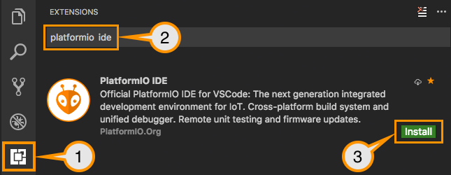

IDE Preparation
- Download and install official Microsoft Visual Studio Code. PlatformIO IDE is built on top of it.
- Open the extension manager.
- Search for the official
platformio ideextension. - Install PlatformIO IDE extension.

Usage
- Setup new VSCode PlatformIO project.
- Configure a platform option in platformio.ini file:
pioarduino supports Espressif Arduino-esp32 core version 3.0.4 and Espressif IDF version 5.1.4
Environment Links
See the PlatformIO platform documentation for details.
Stable version
[env:stable]
platform = https://github.com/pioarduino/platform-espressif32/releases/download/51.03.04/platform-espressif32.zip
board = ...
Development version
espressif Arduino repo branch master and latest compiled Arduino libs
[env:development]
platform = https://github.com/pioarduino/platform-espressif32.git#develop
board = ...
Configuration
Please navigate to the PlatformIO documentation page.
Additional Configuration
Please see Official PlatformIO Documentation for advanced usage, packages, boards, frameworks, etc.
Issues with boards
All issues caused from boards (wrong / missing) will not be fixed by the maintainer(s).
A PR needs to be provided to solve.